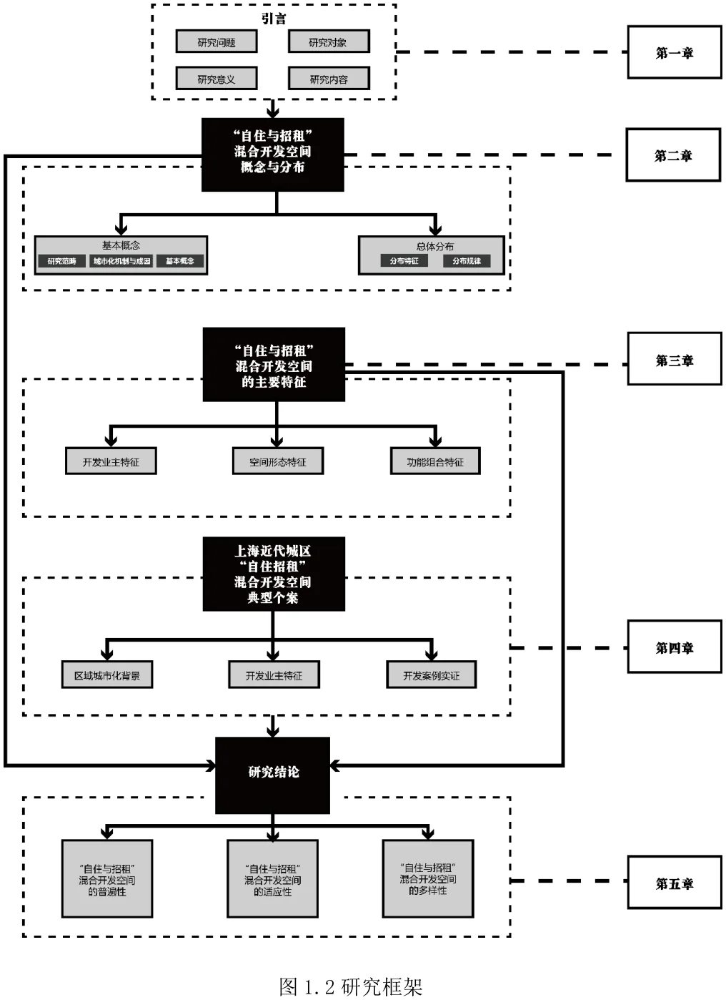
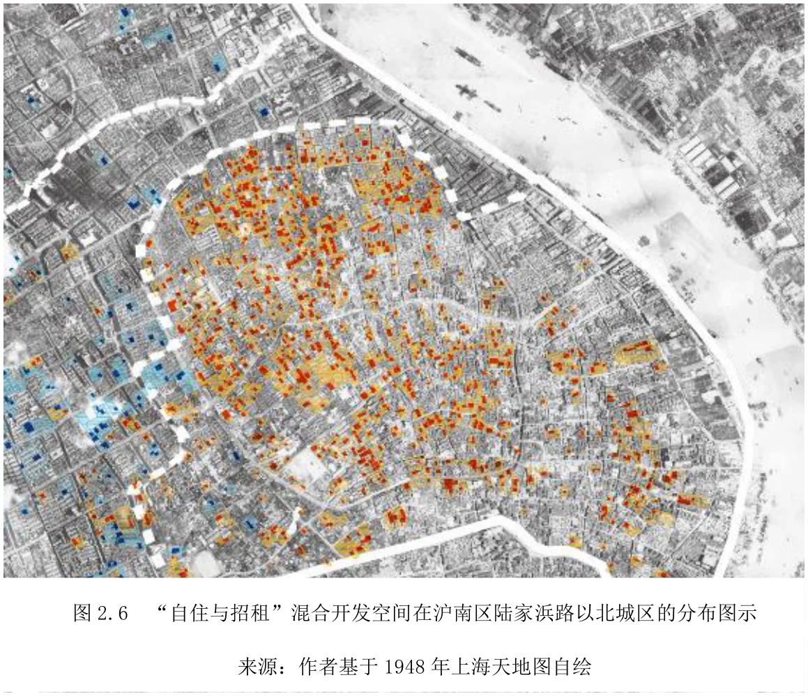
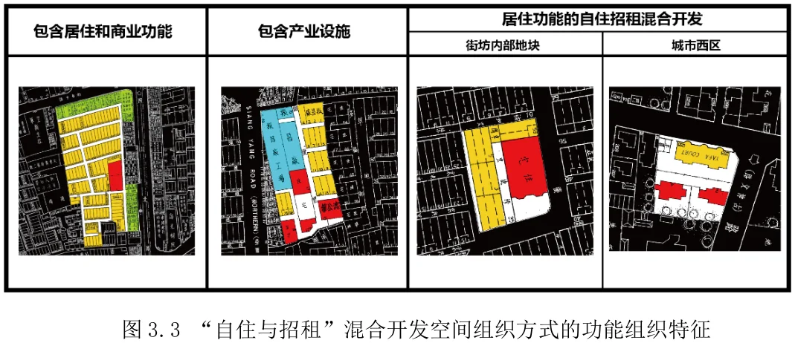
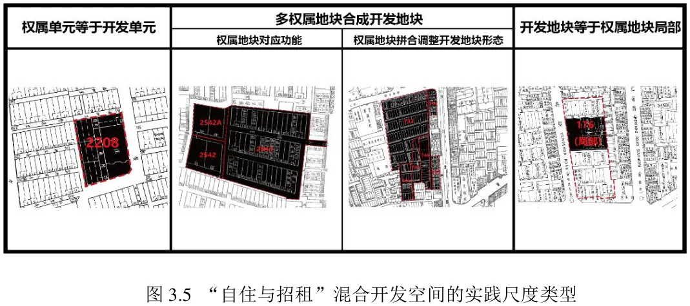
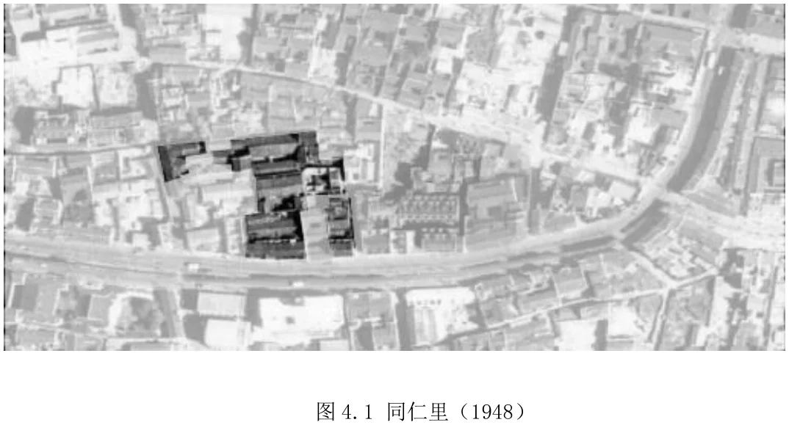
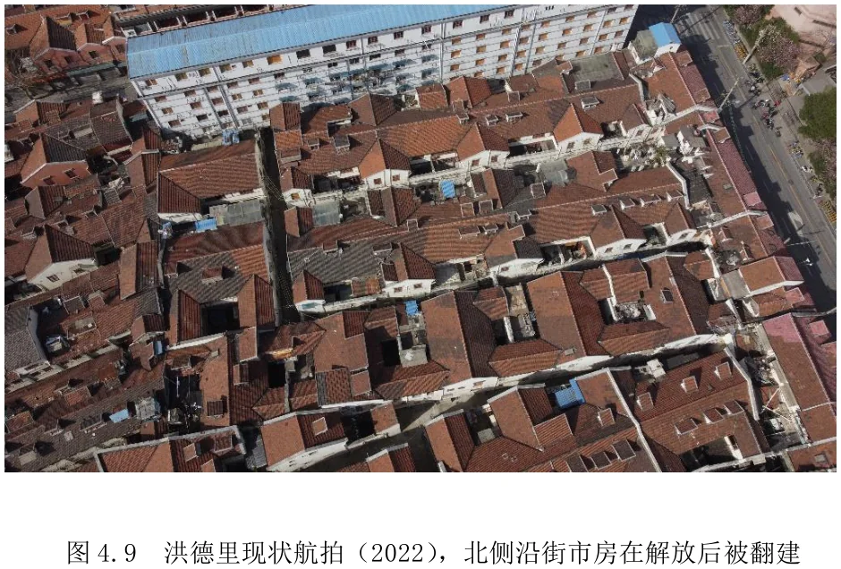
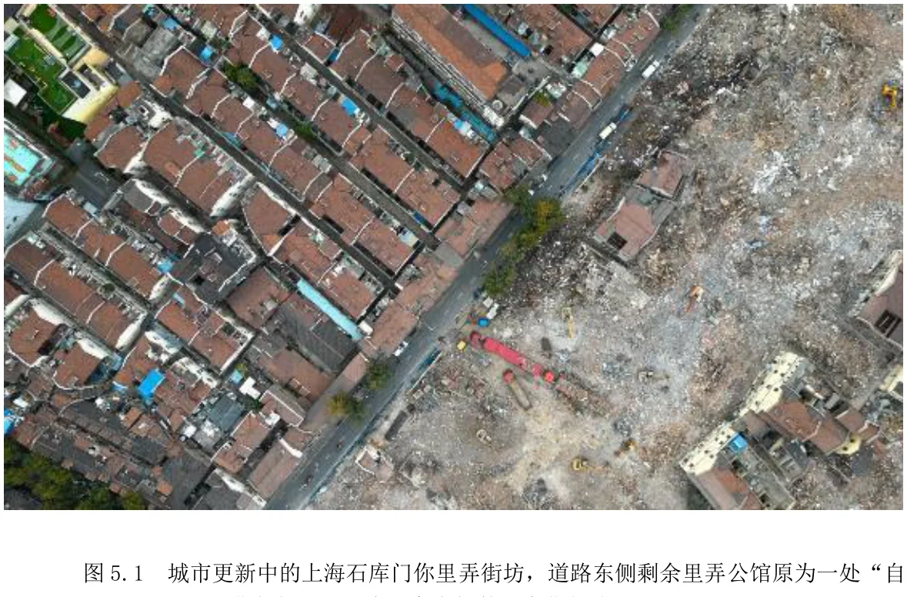

High-density mixed residence of landlords and tenants on the same development plot was a common phenomenon in modern urban Shanghai. In physical terms it took the form of a mix: the owner-occupied part — larger, more ornately decorated, more elaborately constructed — and the rental part used by tenants — smaller, more modestly decorated, more economically built. Together they constitute a recognisable, typologically definable combination of spatial elements in Shanghai's modern urbanisation.
A 1997 description in Shanghai Longtang captures it well: a wealthy owner would first build a lane of rental housing along the street frontage, and place his own residence at the far end of the lane, concealed from the road. The lane was the business; the house at the back was the home.
Three research questions
Concept. What exactly is “owner-occupied and rented” mixed development space, and what does it contain? Earlier studies mentioned the phenomenon in passing — Wang Shaozhou used Hongdeli on Xiamen Road to illustrate owner-occupation plus rental development as a feature of early lane housing — but never defined it as a mature development model grounded in documented cases.
Distribution. Through historical drawings, archives and text, identify and map these spaces across the core of modern urban Shanghai, establish their distribution characteristics, and use them as a lens on how the material composition and evolution differed between districts.
Composition. Based on the physical space and social substrate of different districts, reconstruct the genesis, composition and evolution of typical cases, and ask how the development unit was constituted and how it reflected the character of its district.
Method
Morpho-typological spatial reading — to recognise and define the space type conceptually.
Historical land-registry evidence — systematic use of Shanghai's modern land and cadastral records, historical drawings and municipal archives.
Urban social geography — to interpret the spatial phenomena in relation to their social and economic conditions.

Fig. 1 — Research framework. Source: author.
Concepts and distribution
The study found the practice present in every district of modern urban Shanghai and across every phase of its urbanisation. From the organic traditional lanes of the old county town, through the dense early-concession lane housing, to settlements formed by the densification of traditional dwelling, and out to the low-density new lanes and modern apartments of the western districts — the phenomenon appears in many forms.
Critically, the building types on both sides of the arrangement were not fixed: the owner-occupied core could be a traditional courtyard house, a garden villa, or a top-floor apartment in a modern block, while the rental hinterland covered almost every collective dwelling type in Shanghai's modern urbanisation. That is what makes it not a local curiosity but a mature and widely applied model.

Fig. 2 — Distribution of “owner-occupied and rented” mixed development space north of Lujiabang Road, south Shanghai. Source: author, drawn on the 1948 Shanghai land atlas.
Pattern characteristics
Who the developers were. Not a narrow class: merchant families from Ningbo, Dinghai and Nanhui, compradors, industrialists, foreign businessmen such as Henry Morriss, and modern architects acting as developers — different social backgrounds, same development logic.
Functional composition. The model was a way of earning a return within a relatively small development unit, adjusting the relation between the owner's own life and the rented production of income.
Physical characteristics and adaptability. The type was never frozen: it adapted strongly to owner type, spatial strategy and functional demand, and achieved the close coexistence of contradictory elements over more than a century of built fact.

Fig. 3 — Functional organisation of the mixed development space. Source: author.

Fig. 4 — Types of practical scale in the mixed development space. Source: author.
Eight cases, eight districts
The case chapter reconstructs the genesis, composition and evolution of eight developments, each rooted in a different urbanisation setting and a different kind of owner.
Tongrenli — mixed development in the old county town; developer: the Cao family.
Jixianglong — the traditional city ward, formed alongside the Jiuda wharf; developer: the Li family of Zhenhai, Ningbo.
Hongdeli — high-density built-up area of the central International Settlement; developer: the Dinghai merchant Hong Peiqing.
Yukangli — high-density built-up area of the French Concession, formed from land subdivided out of a hospital reserve; developer: the Chen family of Nanhui.
Gongyifang — a Cantonese community in the northern International Settlement; developers: the brothers Chen Bingqian and Chen Fuchen.
Guangyuli — the eastern industrial district of the International Settlement, tied to the Dalong machine works; developer: Yan Yutang.
Morriss Village — the western district of the International Settlement; developer: Henry Morriss and family.
Xiefa Apartments — the former French Concession west of Route Sœur; developers: the architects Fan Wenzhao and Yang Weibin, working in a new building type.

Fig. 5 — Tongrenli (1948). Source: author, drawn on the 1948 Shanghai land atlas.

Fig. 6 — Hongdeli today (aerial view, 2022); the street-front shops on the north side were rebuilt after 1949. Source: author.
Conclusions
The practice originated in Shanghai's traditional market towns but spread across every district and every phase of modern urbanisation. Behind the ubiquity of the built fact lies an urbanisation mechanism based on the commodification and privatisation of land.
Under the concession authorities' relatively light-touch control of private owners — before 1927 the settlement administrations did not closely regulate the functional content of urban development, limiting themselves to facility safety, build quality and utility connections — owners' initiative over their own land was strongly activated. Using self-occupied land for rental housing development became a viable model, and owners of every social background took part.
The ubiquity of this space provides a visible, tangible measure for reading Shanghai's modern urbanisation: its region-wide distribution reflects the dispersed speculative character of the macro mechanism, while its district-level fluctuations reflect the overall trend of urbanisation.
But the model was not sustainable over the long run. Internally, spatial, economic and social contradictions at the micro plot scale pushed it apart — either the owner-occupier and the tenant separated, or the two converged. Externally, as social differentiation grew with the scale of urbanised space, the city expanded outwards with low-density garden villas, new lanes and modern apartments for wealthier classes while densifying earlier districts with higher-density lane housing. In that setting, the mixed development model ran its course — in the end reduced from a working model to a mere form.
The type evolution visible beneath the diversity is at once a sign of rising productive capacity and a micro-level feedback of intensifying macro social differentiation.

Fig. 7 — Lane housing under urban renewal: the remaining longtang; the former owner's residence on the east side of the road was one such “owner-occupied and rented” unit. Source: author.
A note on limitations
The thesis states its own limits rather than leaving them to the reader. Subjectively, the author judged that the study could not yet apply economic and sociological theory to build a structured reading of Shanghai's modern urbanisation, so much of the empirical work remains description of phenomena rather than explanation reaching into the core mechanism. Objectively, although open land-registry data for modern Shanghai is now broadly systematic, gaps remain — such as unregistered land in parts of the former International Settlement — and the surviving records are unevenly distributed across years, limiting how finely the morphological evolution can be reconstructed.
Beyond the historical argument, the study points at contemporary urban renewal: the very type of lane-housing district it analyses is what renewal now acts upon, and the mixed development unit is one of the spatial objects that such renewal has to read correctly before it intervenes.
Source: master's thesis, Mixed Development Space of “Owner-occupied and Rented”: The Composition and Evolution of Private Mixed Development Space in Modern Shanghai (College of Architecture and Planning, Tongji University; field: Architectural History & Theory; supervisor: Prof. Liu Gang; submitted March 2024). All figures and photographs were produced by the author unless otherwise credited. Awarded Tongji University's Outstanding Master's Thesis Award, 2024.